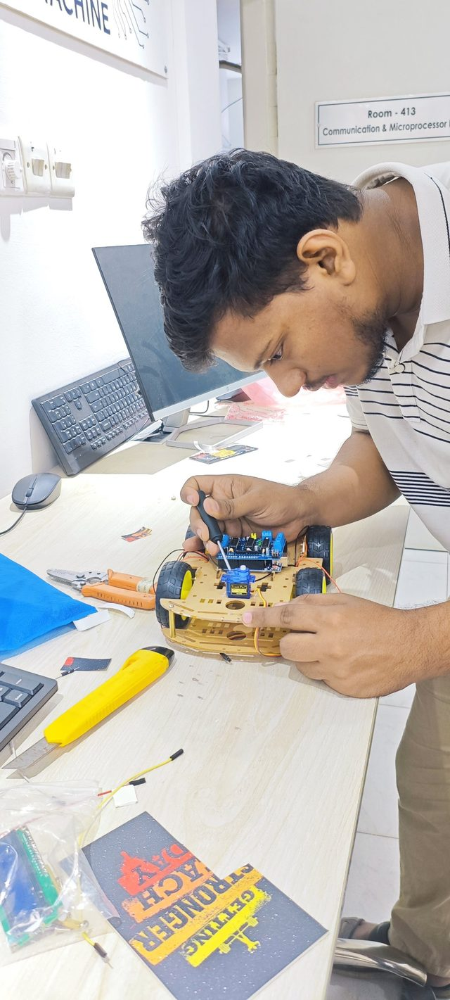
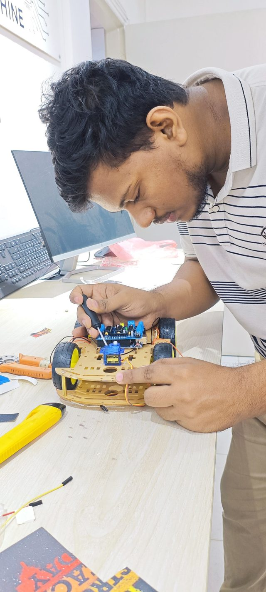

Human Following Robot
An autonomous robot that detects a person, follows at a safe distance and avoids obstacles. The ultrasonic sensor measures distance and the IR sensors steer left or right. In testing, it held the following distance within about 8 cm on average.
Use cases: carrying luggage, shopping help and assisting the elderly.